English
HOME
ニュース
イベント
コラム/インタビュー
大会
学び
オリンピズム
JOCについて
競技団体
src="https://www.joc.or.jp/general/key_visual/files/18/%E4%BF%AE%E6%AD%A3.jpg" alt="東京五輪キャンペーン" />
TOPICS
トピックス
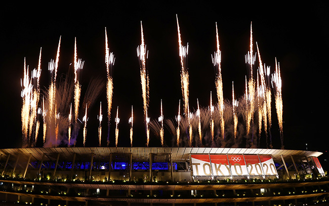
第３２回オリンピック競技大会（2020/東京）が閉幕
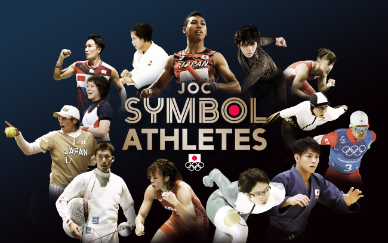
JOCシンボルアスリート・ネクストシンボルアスリート
「オリンピックコンサート2021」10月12日（火）に開催決定！
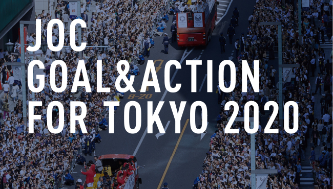
JOC GOAL&ACTION FOR TOKYO 2020」を発表
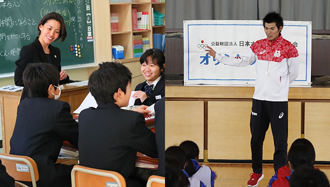
オリンピック・ムーブメント事業
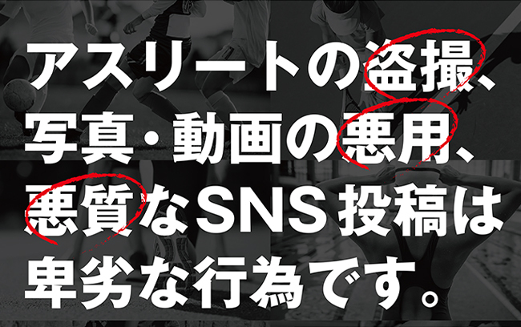
アスリートへの写真・動画による性的ハラスメント防止の取り組みについて
日本オリンピックミュージアム前のオリンピックシンボルについて
GAMES
第32回オリンピック競技大会（2020/東京） 7/23～8/8
NEWS
「東京2020 オリンピック⽇本代表選⼿団 選⼿名鑑」を開設
NEWS
JOCがLINE公式アカウントを開設
UPDATE
東京2020オリンピック・ルール40に関する手続き再開のお知らせ
PICKUP
アスリートへの写真・動画による性的ハラスメント防止の取
NEWS
JOCシンボルアスリートの追加について
PICKUP
ミュージアム企画展「1920→2020 アントワープ大会から1
PICKUP
子どもたちの未来へ JOCチャリティーオークション
ニュース一覧へ
CONTENTS
コンテンツ
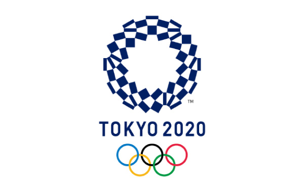第32回 オリンピック競技大会 (2020/東京)
オリンピックを学ぼう！
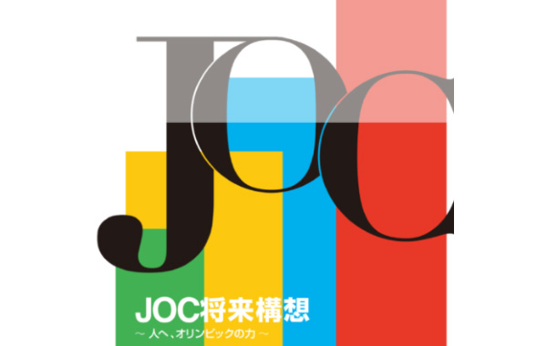JOC将来構想プロジェクトプロジェクト
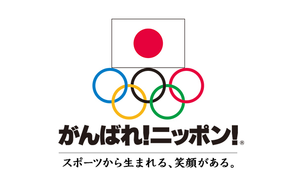震災復興支援プロジェクト
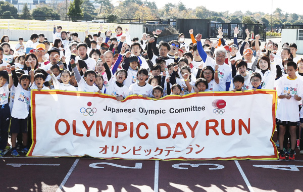イベント
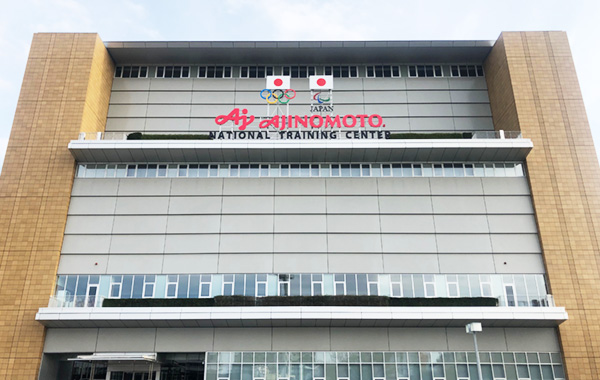味の素ナショナルトレーニングセンター
カレンダー
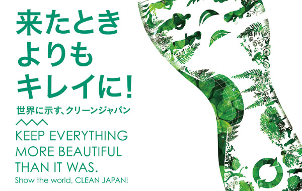スポーツと環境
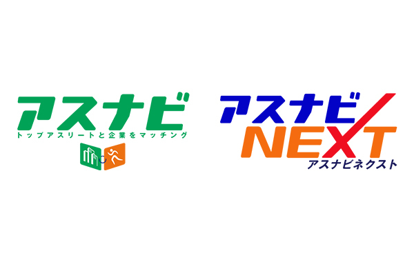就職支援